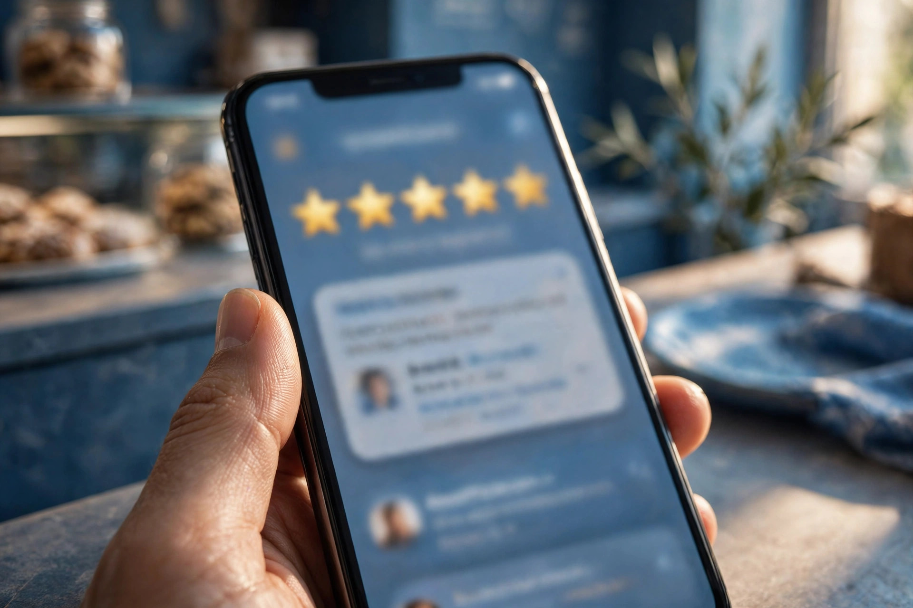

When two businesses appear side by side on Google Maps, customers usually compare two things: the star rating and the number of reviews. A business with a healthy set of genuine reviews looks established and safe to try. A business with none looks like a gamble. Reviews also feed into local rankings, because they are one of the clearest signals Google has that real people use and value your business.
The problem is that most happy customers never think to leave a review on their own. It is not that they are unwilling; the thought simply does not occur to them. That is why the honest way to get more reviews is mostly about asking well, not about shortcuts. And shortcuts, as we will see, carry real risk.
Why Buying Reviews Is Never Worth It
It is easy to find people selling batches of five-star reviews. Resist the offer. Fake reviews break Google's policies, and Google actively looks for them: sudden bursts of praise, reviews from accounts with no history, text that sounds copied. When Google detects them, it can remove the reviews, and repeated abuse can lead to the profile being restricted or suspended. Losing your whole listing over a handful of bought stars is a poor trade.
Customers can often smell fake reviews too. A small shop in a small town with a wall of generic, glowing comments reads as suspicious, and one real complaint among them then looks even worse. Honest reviews, including the occasional ordinary one, build the kind of trust that actually brings people through the door.

Ask at the Right Moment
Timing is the whole secret. The best moment to ask is right after a good experience, while the customer is still pleased: the repair is finished and working, the meal was enjoyed, the delivery arrived on time. A simple, warm request works: "If you were happy with the work, a short review on Google really helps our small business." That sentence succeeds because it is honest, specific and easy to agree to.
Ask everyone, not only the customers you are sure adored you. Choosing only happy customers to ask, sometimes called review gating, is against Google's rules and also gives a false picture. A business that serves people well will naturally receive mostly positive reviews when it asks consistently.
Make Reviewing Effortless
Every extra step loses reviewers. Use the tools Google gives you:
- Your review link. Your profile manager provides a short link that opens the review box directly. Save it and use it everywhere.
- A QR code. Print the review QR code and place it at the counter, on the bill, or on packaging, so customers can scan and write in seconds.
- A follow-up message. If you already message customers about their order or appointment, a polite message later the same day with the link is reasonable and effective.
- Train your team. Anyone who deals with customers should know the one friendly sentence to use and where the QR code is.
Helping customers find the review page is part of complete profile management, which our local SEO and Google Business Profile service sets up alongside categories, photos and services.

Reply to Every Review, Good or Bad
Replying is half the value of reviews. A short thank-you to a happy customer shows you are attentive and encourages others to write. A calm reply to an unhappy customer matters even more: apologise for the experience, avoid excuses and arguments, and offer a way to make it right, such as calling you directly. Future readers judge that reply as much as the complaint, and many businesses win customers precisely because they handled criticism gracefully.
If a review is clearly fake, written by someone who was never a customer, or contains abuse, do not fight in public. Report it through your profile and let Google review it. Meanwhile, a steady flow of genuine reviews pushes any single comment into proper perspective.
Build Reviews Into Your Routine
Reviews grow best as a habit, not a campaign. A sudden push for twenty reviews in one weekend, followed by silence for months, looks unnatural to both Google and readers. Instead, fold asking into daily work: one request at the till, one message after a job, one reply session each week. Over time this produces the steady pattern that supports your Google Maps rankings far better than any burst.
Treat reviews as feedback, too. If several customers mention slow service or praise a particular staff member, that is free business advice, written by the people who pay you. Businesses that read their reviews carefully usually improve faster than those that only count the stars.
What a Good Review Habit Looks Like
None of this costs money, and none of it risks your profile. It simply respects how trust actually works: do good work, invite honest words about it, and respond like a person who cares. That is the approach behind every durable local listing, and the only one we recommend.
Frequently Asked Questions
Is it allowed to ask customers for Google reviews?
Yes. Google allows businesses to ask customers for reviews and to share a review link or QR code. What is not allowed is paying for reviews, offering discounts or gifts in exchange for them, or only asking customers you expect to be positive.
Can I offer a discount in exchange for a review?
No. Any reward given in exchange for a review, including discounts, free items or prize entries, breaks Google's rules and can lead to reviews being removed. You may ask for honest feedback, but the review must be freely given with nothing attached.
What should I do about a negative review?
Reply calmly, thank the customer, acknowledge the problem and invite them to contact you so you can put it right. A fair, polite response often impresses future readers more than the complaint itself. If the review is fake or abusive, report it to Google instead of arguing.
How do I find my Google review link?
Open your Google Business Profile manager, look for the option to ask for reviews or get more reviews, and Google will give you a short link and a QR code. Share that link in messages and print the QR code for your counter, bills or packaging.
Want More Customers From Google?
Call 0327 7350830 or email seozaheer14@gmail.com. Zaheer Seo Expert, Layyah - Rajan Shah Road, Rana Nagar, Chak 116 TDA, Pakistan. Open 24 hours.
Get Your SEO Strategy →